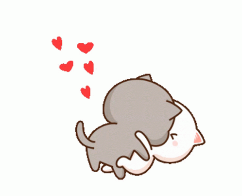

Shiiiiiii!!!! Te quiero mucho mi amor. 🤭
Cada minuto que compartimos es un paso más para cumplir ese deseo de estar juntos hasta el infinito y más alla.
Con lo fugaz que es el tiempo cuando estamos juntos, valoro cada segundo que paso a tu lado.
Sé que para ambos es muy complicado separarnos cuando estamos juntos.
Si pudiera controlar el tiempo lo pausaría cuando estamos enredados en nuestros brazos y dándonos muchos besos dulces y caricias.
Mis sentimientos por ti no dejan de crecer con el pasar de los días, me has hecho sentir muchas cosas bonitas, pense que ya conocía todo sobre el amor y
que ya nada volvería a sorprenderme, pero me equivoque, contigo estoy aprendiendo lo que es un amor bonito,
con todos tus detalles y tu forma de querer no paro de sorprenderme y emocionarme con respecto al amor. Sé que paso poco tiempo desde que empezo nuestra bonita historia,
pero tu bello corazón hizo que decirte "te quiero" quede corto para expresar lo que siento por ti. Deseo con todo mi ser que seas mi amor por siempre, por eso mi corazón
me impulsa a darte toda lo que deseas y mereces de un hombre, quiero amarte, cuidarte y hacerte feliz mi reina, y cuando estemos viejitos en nuestra cabañita que te prometi,
cuando nos quedemos viendo un hermoso paisaje, me agarres de la mano, me mires a los ojos y emocionada me digas que te hice feliz. Me he imaginado mucho ese momento mi amor, y
siempre que pasa por mi cabeza me emociono hasta las lagrimas por la felicidad que me dara lograr darle una vida feliz y plena a la mujer que amo.